|
poet
unspecified
Evolve orbits under tides
|


|
|
poet
unspecified
Evolve orbits under tides
|
|
Starting from eq. 20 of Lai (2012):
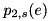
Since 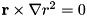:
![\begin{eqnarray*} \mathbf{T}&=&-\left(\frac{G M'}{a^3 \omega_0}\right)^2 \int d^3 x \left\{ \sum_{m,m'}\mathcal{U}_{m,m'} \delta\bar{\rho}_{m,m'}(\mathbf{r}) \exp(-im'\Omega t + i\Delta_{m,m'}) \right\} \mathbf{r}\times \left\{ \sum_{\mu,\mu'}\mathcal{U}_{\mu,\mu'} \exp(i \mu'\Omega t) r^2 \nabla Y_{2,\mu}^*(\theta, \phi) \right\}\\ &=& -\left(\frac{G M'}{a^3 \omega_0}\right)^2 \sum_{m,m',\mu,\mu'} \mathcal{U}_{m,m'} \mathcal{U}_{\mu,\mu'} \exp(i(\mu'-m')\Omega t + i\Delta_{m,m'}) \int d^3 x \delta\bar{\rho}_{m,m'}(\mathbf{r}) r^2 \mathbf{r}\times \nabla Y_{2,\mu}^*(\theta, \phi) \end{eqnarray*}](form_52.png)
Taking the dot product of the torque with 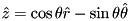, and noting that the 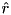 part of 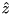 does not contribute, since at any point it is orthogonal to 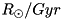, we get:
![\begin{eqnarray*} T_z&=& -\left(\frac{G M'}{a^3 \omega_0}\right)^2 \sum_{m,m',\mu,\mu'} \mathcal{U}_{m,m'} \mathcal{U}_{\mu,\mu'} \exp(i(\mu'-m')\Omega t + i\Delta_{m,m'}) \int d^3 x \delta\bar{\rho}_{m,m'}(\mathbf{r}) r^2 \sin\theta \hat{\theta}\cdot \left[ \mathbf{r}\times \nabla Y_{2,\mu}^*(\theta, \phi) \right]\\ &=& \left(\frac{G M'}{a^3 \omega_0}\right)^2 \sum_{m,m',\mu,\mu'} \mathcal{U}_{m,m'} \mathcal{U}_{\mu,\mu'} \exp(i(\mu'-m')\Omega t + i\Delta_{m,m'}) \int d^3 x \delta\bar{\rho}_{m,m'}(\mathbf{r}) r^2 \sin \theta (\mathbf{r}\times\hat{\theta})\cdot \nabla Y_{2,\mu}^*(\theta, \phi)\\ &=& -\left(\frac{G M'}{a^3 \omega_0}\right)^2 \sum_{m,m',\mu,\mu'} \mathcal{U}_{m,m'} \mathcal{U}_{\mu,\mu'} \exp(i(\mu'-m')\Omega t + i\Delta_{m,m'}) \int d^3 x \delta\bar{\rho}_{m,m'}(\mathbf{r}) r^3 \sin\theta \hat{\phi}\cdot\nabla Y_{2,\mu}^*(\theta, \phi)\\ &=& -\left(\frac{G M'}{a^3 \omega_0}\right)^2 \sum_{m,m',\mu,\mu'} \mathcal{U}_{m,m'} \mathcal{U}_{\mu,\mu'} \exp(i(\mu'-m')\Omega t + i\Delta_{m,m'}) \int d^3 x \delta\bar{\rho}_{m,m'}(\mathbf{r}) r^2 \frac{\partial Y_{2,\mu}^*(\theta, \phi)}{\partial\phi}\\ &=& -\left(\frac{G M'}{a^3 \omega_0}\right)^2 \sum_{m,m',\mu,\mu'} i\mu\mathcal{U}_{m,m'} \mathcal{U}_{\mu,\mu'} \exp(i(\mu'-m')\Omega t + i\Delta_{m,m'}) \int d^3 x \delta\bar{\rho}_{m,m'}(\mathbf{r}) r^2 Y_{2,\mu}^*(\theta, \phi) \end{eqnarray*}](form_57.png)
Using the fact that 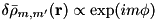, we must have  , further if we average over over an orbit we must have 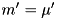:
, further if we average over over an orbit we must have 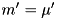:
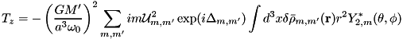
The real part of which is:
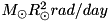
Now we dot with 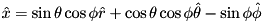. Again, the term does not contribute:
![\begin{eqnarray*} T_x &=& -\left(\frac{G M'}{a^3 \omega_0}\right)^2 \sum_{m,m',\mu,\mu'} \mathcal{U}_{m,m'} \mathcal{U}_{\mu,\mu'} \exp(i(\mu'-m')\Omega t + i\Delta_{m,m'}) \int d^3 x \delta\bar{\rho}_{m,m'}(\mathbf{r}) r^2 (\cos\theta\cos\phi\hat{\theta} - \sin\phi\hat{\phi}) \left[ \mathbf{r}\times \nabla Y_{2,\mu}^*(\theta, \phi) \right]\\ &=& -\left(\frac{G M'}{a^3 \omega_0}\right)^2 \sum_{m,m',\mu,\mu'} \mathcal{U}_{m,m'} \mathcal{U}_{\mu,\mu'} \exp(i(\mu'-m')\Omega t + i\Delta_{m,m'}) \int d^3 x \delta\bar{\rho}_{m,m'}(\mathbf{r}) r^3 (\cos\theta\cos\phi\hat{\phi} + \sin\phi\hat{\theta})\cdot \nabla Y_{2,\mu}^*(\theta, \phi)\\ &=& -\left(\frac{G M'}{a^3 \omega_0}\right)^2 \sum_{m,m',\mu,\mu'} \mathcal{U}_{m,m'} \mathcal{U}_{\mu,\mu'} \exp(i(\mu'-m')\Omega t + i\Delta_{m,m'}) \int d^3 x \delta\bar{\rho}_{m,m'}(\mathbf{r}) r^2 \left( \cot\theta\cos\phi\frac{\partial}{\partial \phi} + \sin\phi\frac{\partial}{\partial \theta} \right) Y_{2,\mu}^*(\theta, \phi) \end{eqnarray*}](form_64.png)
Averaging over an orbit:
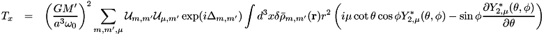
Now we use:
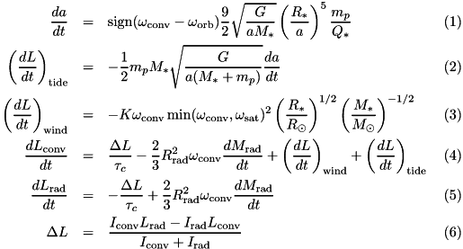
To get:
![\begin{eqnarray*} T_x &=& \frac{T_0}{MR^2} \sum_{m,m',\mu} \mathcal{U}_{m,m'} \mathcal{U}_{\mu,m'} i\exp(i\Delta_{m,m'}) \int d^3 x \delta\bar{\rho}_{m,m'}(\mathbf{r}) r^2 \left( \mu\cot\theta\exp(i\phi) Y_{2,\mu}^*(\theta, \phi) + i\sin\phi\sqrt{(2-\mu)(3+\mu)}\exp(i\phi) Y_{2,\mu+1}^* \right)\\ &=& \frac{T_0}{MR^2} \sum_{m,m',\mu} \mathcal{U}_{m,m'} \mathcal{U}_{\mu,m'} i\exp(i\Delta_{m,m'}) \int d^3 x \delta\bar{\rho}_{m,m'}(\mathbf{r}) r^2 \left( \mu\cot\theta\exp(i\phi) Y_{2,\mu}^*(\theta, \phi) + \sqrt{(2-\mu)(3+\mu)}[\exp(2i\phi)-1] Y_{2,\mu+1}^* \right)\\ \end{eqnarray*}](form_67.png)
Since the real part of the above expression is:
![\begin{eqnarray*} T_x &=& -\frac{T_0}{MR^2} \sum_{m,m',\mu} \mathcal{U}_{m,m'} \mathcal{U}_{\mu,m'} \sin(\Delta_{m,m'}) \int d^3 x \delta\bar{\rho}_{m,m'}(\mathbf{r}) r^2 \left( \mu\cot\theta\exp(i\phi) Y_{2,\mu}^*(\theta, \phi) + \frac{\sqrt{(2-\mu)(3+\mu)}}{2}[\exp(2i\phi)-1] Y_{2,\mu+1}^* \right)\\ &=& T_0 \sum_{m,m'} \mathcal{U}_{m,m'} \sin(\Delta_{m,m'})( \kappa_{m,m'}^-\mathcal{U}_{m-1,m'}+ \kappa_{m,m'}^+\mathcal{U}_{m+1,m'})\\ \kappa_{m,m'}^-&\equiv& \frac{\sqrt{(3-m)(2+m)}}{2MR^2} \int d^3 x \delta\bar{\rho}_{m,m'}(\mathbf{r}) r^2 Y_{2,m}^*=\frac{\sqrt{(3-m)(2+m)}}{2}\kappa_{m,m'}\\ \kappa_{m,m'}^+&\equiv&-\frac{1}{MR^2} \int d^3 x \delta\bar{\rho}_{m,m'}(\mathbf{r}) r^2\left[ (m+1)\cot\theta\exp(i\phi) Y_{2,m+1}^*(\theta,\phi)+ \frac{\sqrt{(1-m)(4+m)}}{2}\exp(2i\phi) Y_{2,m+2}^* \right] \end{eqnarray*}](form_68.png)
We have already expressed  in terms of 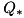, and just as in Lai (2012), we only need 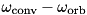 for 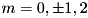.
in terms of 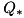, and just as in Lai (2012), we only need 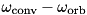 for 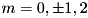.
![\begin{eqnarray*} \kappa_{0,m'}^+&=&-\frac{1}{MR^2} \int d^3 x \delta\bar{\rho}_{0,m'}(\mathbf{r}) r^2\left[ \cot\theta\exp(i\phi) Y_{2,1}^*(\theta,\phi)+ \exp(2i\phi) Y_{2,2}^*(\theta,\phi) \right]\\ &=&-\frac{1}{MR^2} \int d^3 x \delta\bar{\rho}_{0,m'}(\mathbf{r}) r^2\left[ -\frac{1}{2}\sqrt{\frac{15}{2\pi}}\cos^2\theta+ \frac{1}{4}\sqrt{\frac{15}{2\pi}}\sin^2\theta \right]\\ &=&\frac{1}{MR^2} \int d^3 x \delta\bar{\rho}_{0,m'}(\mathbf{r}) r^2 \frac{1}{4}\sqrt{\frac{15}{2\pi}}(3\cos^2\theta-1)\\ &=&\frac{\sqrt{3/2}}{MR^2}\int d^3 x \delta\bar{\rho}_{0,m'}(\mathbf{r}) r^2 Y_{2,0}^*(\theta, \phi)\\ \Rightarrow \kappa_{0,m'}^+&=&\sqrt{3/2}\kappa_{0,m'}\\ \kappa_{-1,m'}^+&=&-\frac{1}{MR^2} \int d^3 x \delta\bar{\rho}_{-1,m'}(\mathbf{r}) r^2 \frac{\sqrt{6}}{2}\exp(2i\phi) Y_{2,1}^*\\ &=&\frac{1}{MR^2} \int d^3 x \delta\bar{\rho}_{-1,m'}(\mathbf{r}) r^2 \frac{\sqrt{6}}{2}\exp(2i\phi) Y_{2,-1}^*\\ \Rightarrow\kappa_{-1,m'}^+&=&\sqrt{3/2}\kappa_{-1,m'}\\ \kappa_{1,m'}^+&=&-\frac{1}{MR^2} \int d^3 x \delta\bar{\rho}_{1,m'}(\mathbf{r}) r^2 2\cot\theta\exp(i\phi) Y_{2,2}^*(\theta,\phi)\\ &=&-\frac{1}{MR^2} \int d^3 x \delta\bar{\rho}_{1,m'}(\mathbf{r}) r^2 \frac{1}{2}\sqrt{\frac{15}{2\pi}}\sin\theta\cos\theta\exp(-i\phi)\\ &=&\frac{1}{MR^2} \int d^3 x \delta\bar{\rho}_{1,m'}(\mathbf{r}) r^2 Y_{2,1}^*(\theta,\phi)\\ \Rightarrow\kappa_{1,m'}^+&=&\kappa_{1,m'}\\ \kappa_{-2,m'}^+&=&-\frac{1}{MR^2} \int d^3 x \delta\bar{\rho}_{-2,m'}(\mathbf{r}) r^2\left[ -\cot\theta\exp(i\phi) Y_{2,-1}^*(\theta,\phi)+ \sqrt{\frac{3}{2}}\exp(2i\phi) Y_{2,0}^* \right]\\ &=&-\frac{1}{MR^2} \int d^3 x \delta\bar{\rho}_{-2,m'}(\mathbf{r}) r^2\left[ -\frac{1}{2}\sqrt{\frac{15}{2\pi}}\cos^2\theta\exp(2i\phi)+ \frac{1}{4}\sqrt{\frac{15}{2\pi}}\exp(2i\phi)(3\cos^2\theta-1) \right]\\ &=&-\frac{1}{MR^2} \int d^3 x \delta\bar{\rho}_{-2,m'}(\mathbf{r}) r^2 \frac{1}{4}\sqrt{\frac{15}{2\pi}}\exp(2i\phi)\left[ -\cos^2\theta+3\cos^2\theta-1 \right]\\ &=&\frac{1}{MR^2} \int d^3 x \delta\bar{\rho}_{-2,m'}(\mathbf{r}) r^2 Y_{-2,m}^*(\theta, phi)\\ \Rightarrow \kappa_{-2,m'}^+&=&\kappa_{-2,m'}\\ \end{eqnarray*}](form_73.png)
Now we dot with 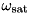. Again, the term does not contribute:
![\begin{eqnarray*} T_y &=& -\left(\frac{G M'}{a^3 \omega_0}\right)^2 \sum_{m,m',\mu,\mu'} \mathcal{U}_{m,m'} \mathcal{U}_{\mu,\mu'} \exp(i(\mu'-m')\Omega t + i\Delta_{m,m'}) \int d^3 x \delta\bar{\rho}_{m,m'}(\mathbf{r}) r^2 (\cos\theta\sin\phi\hat{\theta} - \cos\phi\hat{\phi}) \left[ \mathbf{r}\times \nabla Y_{2,\mu}^*(\theta, \phi) \right]\\ &=& -\left(\frac{G M'}{a^3 \omega_0}\right)^2 \sum_{m,m',\mu,\mu'} \mathcal{U}_{m,m'} \mathcal{U}_{\mu,\mu'} \exp(i(\mu'-m')\Omega t + i\Delta_{m,m'}) \int d^3 x \delta\bar{\rho}_{m,m'}(\mathbf{r}) r^2 \left( \cot\theta\sin\phi\frac{\partial}{\partial \phi} + \cos\phi\frac{\partial}{\partial \theta} \right) Y_{2,\mu}^*(\theta, \phi) \end{eqnarray*}](form_75.png)
Averaging over an orbit:
![\begin{eqnarray*} T_y &=& -\left(\frac{G M'}{a^3 \omega_0}\right)^2 \sum_{m,m',\mu} \mathcal{U}_{m,m'} \mathcal{U}_{\mu,m'} \exp(i\Delta_{m,m'}) \int d^3 x \delta\bar{\rho}_{m,m'}(\mathbf{r}) r^2 \left( i\mu\cot\theta\sin\phi Y_{2,\mu}^*(\theta, \phi) + \cos\phi\frac{\partial Y_{2,\mu}^*(\theta, \phi)} {\partial \theta} \right)\\ &=& -\left(\frac{G M'}{a^3 \omega_0}\right)^2 \sum_{m,m',\mu} \mathcal{U}_{m,m'} \mathcal{U}_{\mu,m'} \exp(i\Delta_{m,m'}) \int d^3 x \delta\bar{\rho}_{m,m'}(\mathbf{r}) r^2 \left\{ i\mu\cot\theta\sin\phi Y_{2,\mu}^*(\theta, \phi) + \cos\phi\left[\mu\cot\theta Y_{2,\mu}^* + \sqrt{(2-\mu)(3+\mu)}\exp(i\phi) Y_{2,\mu+1}^* \right] \right\}\\ &=& -\left(\frac{G M'}{a^3 \omega_0}\right)^2 \sum_{m,m',\mu} \mathcal{U}_{m,m'} \mathcal{U}_{\mu,m'} \exp(i\Delta_{m,m'}) \int d^3 x \delta\bar{\rho}_{m,m'}(\mathbf{r}) r^2 \left[ \mu\cot\theta\exp(i\phi) Y_{2,\mu}^*(\theta, \phi) + \cos\phi\sqrt{(2-\mu)(3+\mu)}\exp(i\phi) Y_{2,\mu+1}^* \right]\\ &=& -\left(\frac{G M'}{a^3 \omega_0}\right)^2 \sum_{m,m',\mu} \mathcal{U}_{m,m'} \mathcal{U}_{\mu,m'} \exp(i\Delta_{m,m'}) \int d^3 x \delta\bar{\rho}_{m,m'}(\mathbf{r}) r^2 \left[ \mu\cot\theta\exp(i\phi) Y_{2,\mu}^*(\theta, \phi) + \frac{\sqrt{(2-\mu)(3+\mu)}}{2}(\exp(2i\phi)+1) Y_{2,\mu+1}^* \right]\\ &=& -\frac{T_0}{MR^2} \sum_{m,m'} \mathcal{U}_{m,m'} \left(\kappa^-_{m,m'}\mathcal{U}_{m-1,m'}+ \kappa^+_{m,m'}\mathcal{U}_{m+1,m'}\right) \exp(i\Delta_{m,m'}) \end{eqnarray*}](form_76.png)
With the same 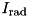 and 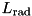 as for 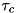. So taking the real part gives:
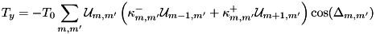
So the real part is proportional to 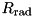 and so for small tidal dissipation it is independent of the dissipation, as expected since this term is responsible for the precession.
 1.8.11
1.8.11